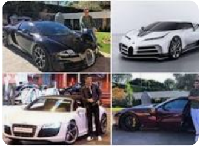
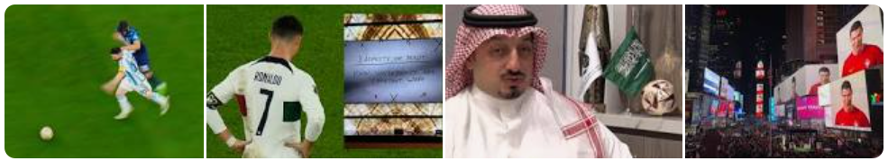

About 311,000,000 results (0.69 seconds)
Cristiano Ronaldo
Portuguese footballer
Cristiano Ronaldo Suffering From Depression Concerning... Celebrity Psychologist Jordan Peters...
2 hours ago
Current Team
Portugal National football tea...
Age
37 years old (5 February 1985)
Cristiano Ronaldo -latest news, net worth and boosts...
Top Stories
News about Cristiano Ronaldo, World Cup

Mirror
Cristiano Ronaldo Commentson what failing to win World
Cup meaning in Lionel Messi...
1 day ago
Erik ten Hag finally sets the
record straight on Cristiano
Ronaldo's bitter exist
1 day ago
football.london
Erik ten Hag finally sets therecord straight on Cristiano
Ronaldo's bitter exist
11 hours ago

People also ask
Who is No 1 Messi or Ronaldo? expand_more
Messi and Ronaldo have similar enough trophy hauls, but Messi edges things when it comes to league titles, having won La Liga 10 times with Barcelona and Ligue 1 once with PSG.
https://www.goal.com
Cristiano Ronaldo vs Loniel Messi: who is better and who is
GOAT?
in ...
What religion is Ronaldo? expand_more
Catholic Christian
Ronaldo grew up in an impoverished Catholic Christian home, sharing a room with all his siblings.
https://en.wikipedia.org › wiki › Cristiano_Ronaldo Cristiano Ronaldo - Wikipedia
Search for: What religion is Ronaldo?
How many cars does Ronaldo have? expand_more
How many cars are there Ronaldo have? World's richest footballer Cristiano Ronaldo's love for cars is something every CR7 fan is well aware of. Right from Bugatti to McLaren the Portugal star owns one of the most expensive cars in the world. Ronaldo is a proud owner of more than 20 luxurious cars.

https://www.pistonudos.com...
How many cars does ronaldo have - Pistonudos
Search for: How many cars does Ronaldo have?
Is Messi better than Ronaldo? expand_more
While
Ronaldo currently has more goals overall, Messi has the edge
in the scoring
department,
with a higher season average (37.9 to 35), having hit a high of
73 goals in
2011-12, though his average dropped after a disappointing maiden
campaign at PSG in
2021-22.1 day ago
https://www.goal.com
Cristiano Ronaldo vs Loniel Messi: who is better and who is
GOAT?
in ...
Search for: Is Messi better than Ronaldo?
Who is the No 1 player in football history? expand_more
World's No. 1 football player - Lionel Messi
Lionel Messi made his mark for Barcelona as a teenage sensation
and soon became one of
football's brightest shining stars. He scored his first
professional goal against Albacete in
2005.3 days ago
Search for: Who is the No 1 player in football history?
How many shots has Ronaldo taken in his career?expand_more
| Statistic | Per 90 | Percentile |
|---|---|---|
| Shots Total | 4.06 | 97 |
| Assists | 0.10 | 43 |
| xAG | 0.14 | 57 |
| npxG + xAG | 0.65 | 82 |
https://fbref.com FB Home Page Players
Cristiano Ronaldo Stats, Goals, Records, Assisted... -
FBref.com
Search for: How many shots has Ronaldo taken in his career?

44 minutes ago — Cristiano Ronaldo dos Santos Aveiro GOIH ComM
is a Portuguese
professional footballer who plays as a forward and captains the
Portugal national team.
Cristiano Ronaldo's highlights and achievements. View Highlights.
https://www.mirror.co.uk › Sport › Football
9 hours ago — One of the world's best football players,
Cristiano Ronaldo set many
records while playing for Manchester United, Real Madrid,
Juventus and the
Portuguese ...
Net worth: $500m
Boots: Nike CR7
Videos
YouTube - SLIZHENKOV I HD
2 days ago
sky Sports - Sky Sports
3 days ago
YouTube - NepentheZ 2
1 hour ago
519m Followers, 521 Following, 3414 Posts - See Instagram photos
and videos from Cristiano
Ronaldo (@cristiano)
https://www.dailymail.co.uk › sport › cristianoronaldo
12 hours ago — Cristiano Ronaldo remains
SILENT to his 780 MILLION followers on
social media after great rival Lionel Messi shot Argentina to
World Cup glory. +9.
https://www.transfermarkt.com › profil › spieler
Cristiano Ronaldo ➤ free agent since {free
agent_since} ➤ Centre-Forward ➤ Market
value: €20.00m ➤ * Feb 5, 1985 in Funchal, Portugal.
https://www.realmadrid.com › ... › Football legends
Cristiano Ronaldo is a part of Real Madrid's
legacy and will forever be remember as one of the
great icons throughout the club's history.
https://fbref.com › FB Home Page › Players
Check out the latest domestic and international stats, match logs,
goals, height, weight and more
for Cristiano Ronaldo playing for Portugal men's
national ...
https://www.marca.com › ... › Soccer › Premier League

16 hours ago — Get updates on the latest Cristiano Ronaldo News
and enjoy our posts, videos and
analysis on Marca English. All Cristiano Ronaldo news in the same
place.
https://www.whoscored.com › Players › Show › Cristia...
Cristiano Ronaldo statistics – 37 years_old Portugal Midfielder
(Left) / Forward. Check out his
latest detailed stats including goals, assists, ...
Current Team: Portugal
Shirt Number: 7
Full Name: Cristiano Ronaldo dos Santos A...
Positions: Midfielder (Left), Forward
Related searches
Portugal Strikers expand_more
Real Madrid Strikers expand_more
 Portugal roster
expand_more
Portugal roster
expand_more
About
Cristiano Ronaldo dos Santos Aveiro GOIH ComM is a Portuguese professional footballer who plays as a forward for Saudi Professional League club Al Nassr and captains the Portugal national team.Wikipedia
Born: 5 February 1985 (age 37 years), Hospital Dr. Nélio Mendonça, Funchal, Portugal
Current team: Portugal national football team (#7 / Forward) Al-Nassr FC (#7 / Forward)
Dates joined: 2023 (Al-Nassr FC), 2022 (Al-Nassr FC), MORE
Height: 1.87 m
Salary: 26.8 million GBP (2023)
Partner Georgina Rodríguez (2016 –)
 Claim this knowledge panel
Claim this knowledge panel
profile

| League | Matches | Goals |
|
World Cup 2022 |
5 | 1 |
|
World Cup Qualifiers 2021 -22 |
9 | 6 |
|
UEFA EURO 2021 |
4 | 5 |
|
UEFA EURO Qualifiers 2019-20 |
8 | 11 |
|
FIFA Confederations Cup 2022 |
4 | 2 |